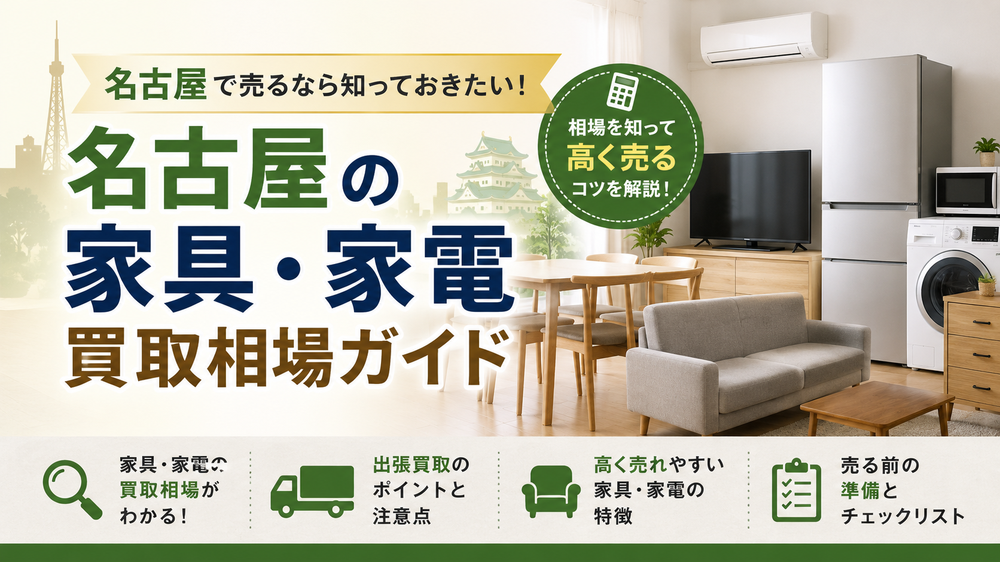

PRICE GUIDE / NAGOYA
名古屋で冷蔵庫・洗濯機・テレビ・電子レンジ・エアコン・ソファ・ダイニング・ベッド・食器棚など、家具家電を売るときの買取相場の目安を主要品目別にまとめました。査定で見られるポイント、年式・メーカー別の評価、高く売るコツ、出張買取の使い分けまで、売る前に押さえておきたい知識を解説します。

名古屋で引っ越し、買い替え、実家整理、遺品整理などを進めるとき、まだ使える家具や家電を「処分する」のではなく「買取に出す」ことで、片付け費用を抑えられる可能性があります。
特に名古屋市内は人口が多く、単身者向け物件、ファミリー向け住宅、学生向け賃貸、転勤世帯なども多いため、中古家具・中古家電の需要が比較的あります。状態の良い冷蔵庫、洗濯機、電子レンジ、テレビ、エアコン、ダイニングセット、ソファ、収納家具などは、出張買取の対象になりやすい品目です。
一方で、家具・家電はすべてが高く売れるわけではありません。年式、メーカー、状態、サイズ、搬出のしやすさ、再販需要によって査定額は大きく変わります。特に大型家具や古い家電は、買取ではなく無料引き取り、または処分費用がかかる場合もあります。
この記事では、名古屋で家具・家電を売る際の買取相場、査定額が上がりやすい品目、売る前の準備、出張買取を利用するときの注意点をわかりやすく解説します。
家具や家電の買取価格は、単純に購入時の価格だけで決まるわけではありません。業者は再販売できるかどうかを基準に査定します。
主に見られるポイントは以下の通りです。
家電の場合、一般的には製造から5年以内のものが買取対象になりやすく、7年から10年以上経過したものは査定が厳しくなる傾向があります。冷蔵庫、洗濯機、エアコンなどは年式が特に重視されます。
家具の場合は、ブランド家具、状態の良い無垢材家具、人気デザインのソファやダイニングセットなどは評価されやすい一方、ノーブランドの大型家具や組み立て式家具は査定額がつきにくいこともあります。
家電は年式とメーカーによって査定額が大きく変わります。以下は名古屋で出張買取を依頼する際の一般的な相場目安です。
冷蔵庫は中古需要が高い家電のひとつです。特に単身者向けの小型冷蔵庫や、ファミリー向けの大型冷蔵庫は状態が良ければ買取対象になりやすいです。
目安としては、単身用の小型冷蔵庫で数千円前後、ファミリー向けの大型冷蔵庫で1万円から数万円程度になることがあります。国内大手メーカーの比較的新しいモデルや、省エネ性能の高いモデルは評価されやすいです。
一方で、製造から10年以上経過しているもの、庫内に強いにおいがあるもの、パッキンの劣化があるもの、冷え方に不具合があるものは買取が難しくなる場合があります。
洗濯機も名古屋の出張買取でよく依頼される品目です。縦型洗濯機、ドラム式洗濯乾燥機ともに需要があります。
縦型洗濯機は数千円から1万円前後、ドラム式洗濯乾燥機は状態や年式によって数万円の査定がつくこともあります。特にパナソニック、日立、東芝、シャープなどの人気メーカーで、乾燥機能付きのモデルは需要があります。
ただし、洗濯槽のにおい、カビ、排水不良、異音、ホースの劣化がある場合は査定額が下がります。売る前に簡単な清掃をしておくことが大切です。
テレビはサイズ、年式、メーカー、4K対応の有無によって相場が変わります。
小型テレビは数千円程度、40インチ以上の液晶テレビや4Kテレビは1万円以上の査定になることがあります。ソニー、パナソニック、シャープ、東芝、LGなどの人気メーカーは比較的査定対象になりやすいです。
リモコン、B-CASカード、電源コード、スタンドなどの付属品が揃っているかも重要です。画面割れ、線が入る、音が出ない、映像が乱れるなどの不具合がある場合は、買取不可になることがあります。
電子レンジやオーブンレンジは、単身者や新生活需要があるため、状態が良ければ買取対象になりやすい家電です。
単機能電子レンジは数百円から数千円程度、オーブンレンジやスチームオーブンレンジは数千円から1万円前後になることがあります。バルミューダ、ヘルシオ、ビストロなどの人気モデルは高めに評価されやすいです。
庫内の焦げ付き、におい、汚れが強い場合は査定額が下がるため、事前に掃除しておくと印象が良くなります。
エアコンは年式、メーカー、容量、取り外し状況によって査定が変わります。製造から5年以内の比較的新しいエアコンは買取対象になりやすく、状態によっては数千円から数万円程度の査定がつくことがあります。
ただし、エアコンは取り外し工事が必要になるため、業者によっては取り外し費用が差し引かれる場合があります。すでに専門業者によって取り外されている場合でも、配管やリモコン、室外機が揃っているかが重要です。
家具は家電以上に状態やブランドによって査定額に差が出ます。購入価格が高かった家具でも、サイズが大きい、搬出が難しい、再販しにくいデザインの場合は査定が低くなることがあります。
ソファは人気のある家具ですが、布地の汚れ、へたり、におい、ペットの毛、破れなどが査定に大きく影響します。
ノーブランドのソファは数百円から数千円程度、状態の良いブランドソファや本革ソファは1万円以上の査定になることもあります。カリモク、ニトリの上位モデル、無印良品、unico、ACTUS、飛騨産業などは需要があります。
大型ソファは搬出が難しい場合、査定額が下がることがあります。マンションのエレベーターに入るか、階段搬出が必要かも確認されるポイントです。
ダイニングセットはファミリー層に需要があるため、状態が良ければ買取対象になりやすい家具です。
ノーブランド品は数千円程度、ブランド家具や無垢材のダイニングセットは1万円から数万円程度になることがあります。テーブルだけよりも、椅子がセットで揃っている方が査定されやすいです。
天板の傷、輪染み、ぐらつき、椅子の破れなどがあると査定額は下がります。売る前に表面を拭き、ネジの緩みなどを確認しておくとよいでしょう。
ベッドはフレームのみであれば買取対象になることがありますが、マットレスは衛生面の理由から買取が難しい場合があります。
ブランドベッドフレーム、収納付きベッド、状態の良い木製フレームなどは査定対象になりやすいです。相場は数千円から1万円前後が目安ですが、ブランドや状態によって変わります。
マットレスはシミ、へたり、においがあると買取不可になりやすいため、事前に業者へ確認しておくことをおすすめします。
食器棚、キッチンボード、チェスト、本棚、テレビボードなどの収納家具は、サイズと状態が重要です。
ニトリ、無印良品、LOWYA、カリモク、unico、ACTUSなどの人気ブランドで、状態が良ければ買取対象になることがあります。相場は数千円から数万円程度です。
一方で、大型の婚礼家具、古いタンス、重い和家具などは、名古屋でも再販需要が限られるため、買取が難しい場合があります。実家整理や遺品整理でよく出る大型家具は、買取と処分を同時に相談できる業者を選ぶとスムーズです。
名古屋で家具・家電を高く売りたい場合、次のような条件に当てはまる品物は査定額がつきやすい傾向があります。
名古屋で家具・家電を売る場合、買取相場は品目、年式、メーカー、状態、需要によって大きく変わります。
冷蔵庫、洗濯機、テレビ、電子レンジ、エアコンなどの家電は、製造から5年以内で状態が良いものほど買取されやすくなります。ソファ、ダイニングセット、収納家具などの家具は、ブランド、状態、搬出しやすさが重要です。
高く売るためには、早めに査定へ出すこと、簡単に清掃しておくこと、付属品を揃えること、複数点をまとめて依頼することがポイントです。
引っ越し、買い替え、実家整理、遺品整理で不要な家具・家電がある場合は、処分する前に一度出張買取を相談してみるとよいでしょう。買取できるものを先に確認することで、片付け費用を抑えながら、スムーズに整理を進めることができます。
家具・家電・家まるごと、しっかり高く。LINEで写真を送るだけで仮査定OK。
最短即日でお伺いします。査定無料・キャンセル料無料。